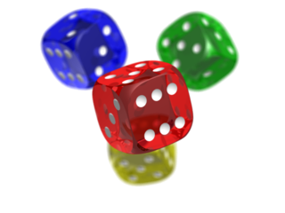

<script src="https://cdnjs.cloudflare.com/ajax/libs/gsap/1.19.0/TweenMax.min.js"></script>
<link href='https://fonts.googleapis.com/css?family=Roboto:300,400,700' rel='stylesheet' type='text/css'>

<module>
  <style>
    #bg-container {
      font-family: Roboto;
      height: 250px;
      width: 300px;
      font-size: 151px;
      line-height: 97px;
      word-wrap: break-word;
      letter-spacing: -11px;
      overflow: hidden;
      background: red;
      padding: 20px 10px;
      box-sizing: border-box;
    }

    #bg-container span {
      display:inline-block;
      opacity: 0.5;
    }
  </style>

  <body>

    <div id="bg-container">
      <span>B</span><span>A</span><span>C</span><span>K</span><span>G</span><span>R</span><span>O</span><span>U</span><span>N</span><span>D</span><span> </span><span>1</span>
    </div>
    
  </body>
  <script>
    console.log('bg1');
    window.blah = document.body;
    var tl = new TimelineLite;

    tl.staggerFrom('#bg-container span', 5, {opacity:0, scale:4, rotationZ:0, y:80, transformOrigin:"50% 50%",  ease:Back.easeOut}, 0.2, "+=0");
  </script>
  <script type="text/javascript">
    console.log('testing');
  </script>
  <style>
    #bg-container {
      background: yellow;
    }
  </style>
</module>